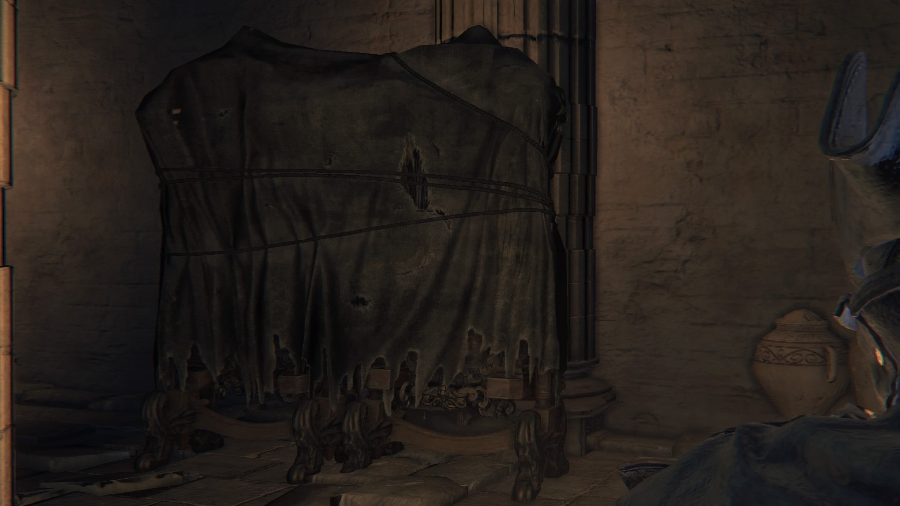
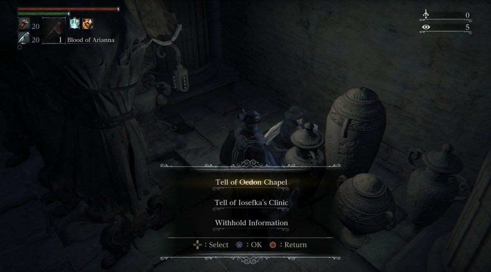
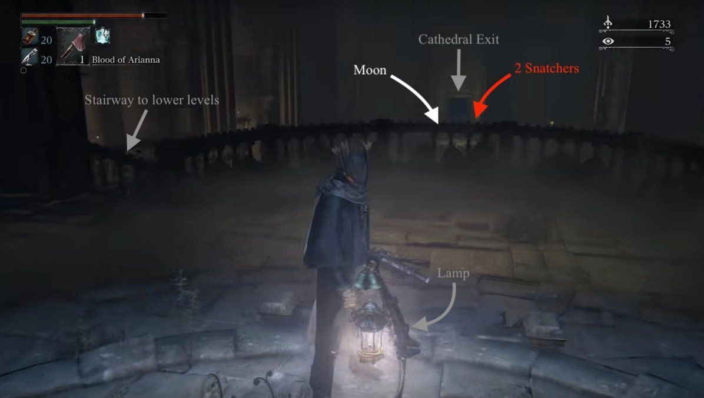
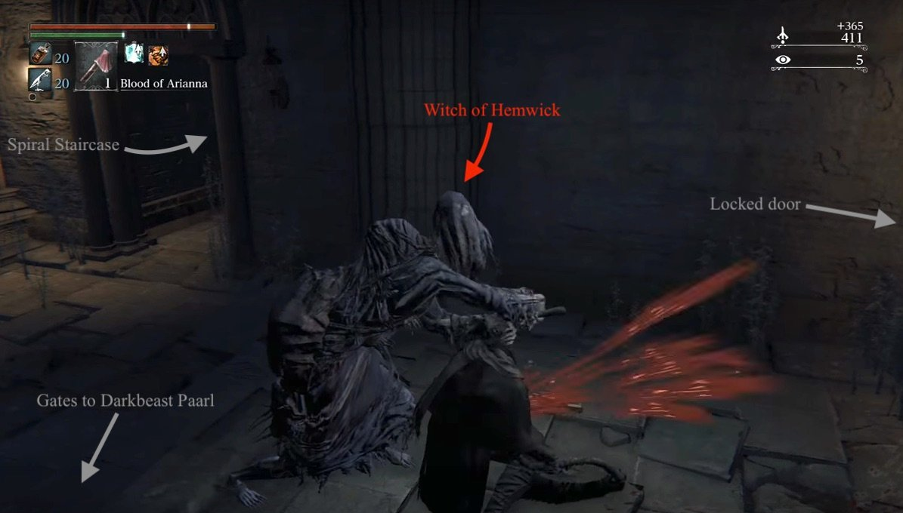
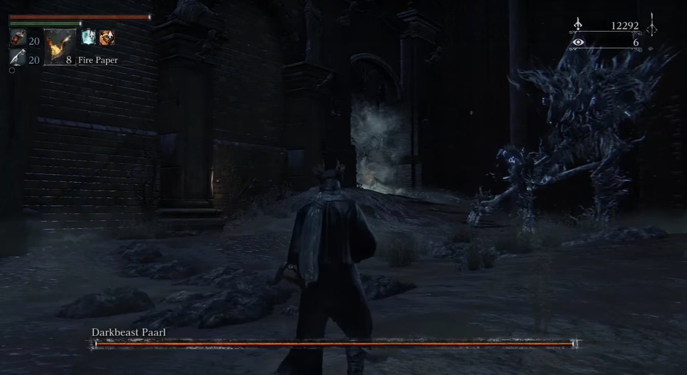
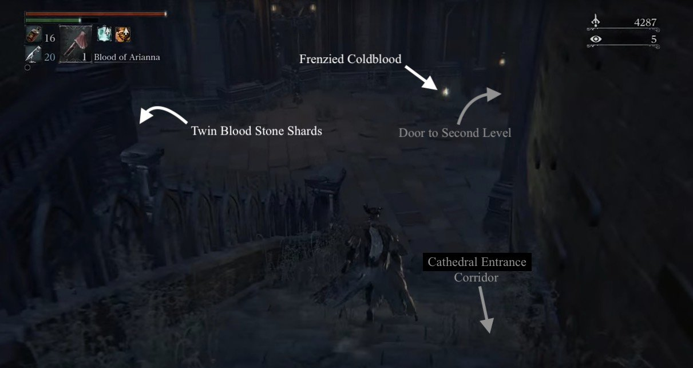
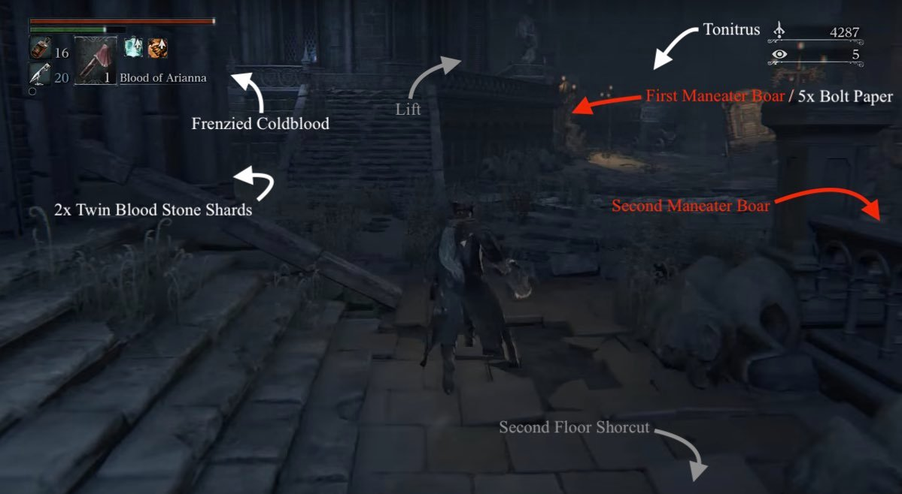

Hypogean Gaol is a location in Bloodborne, a subsection of Yahar'gul that can be accessed before the main quest takes the Hunter there. The Lamp to this location becomes unavailable after the player advances past Rom, the Vacuous Spider, and stays unavailable for the rest of the game. While not a 'true' area of the game as it is labelled as Yahar'gul, it is called the Hypogean Gaol to differentiate it from the later part of the area.
General Information

- Previous: Cathedral Ward, Grand Cathedral Lamp
- Next: Cainhurst Castle
- Suggested Level: 40 to 50
- Suggested Upgrade: +4 or above
- Bosses: 1
- Lamps: 2
- Insight: Find Darkbeast Paarl (+1), Defeat the Darkbeast Paarl (+3)
Hypogean Gaol Map
NPCs in the area
Bosses
Items
Weapons
Consumables
- Twin Blood Stone Shard x3
- Madman's Knowledge x3
- Bolt Paper x5
- Blood Stone Shard
- Blood Vials x6
- Quicksliver Bullets x10
Specials
Enemies
- 2x Scurrying Beast (Wandering Madness)
- Snatcher
- Witch of Hemwick
- Maneater Boar
- Hunter Mob
- Tainted Dog(Rabid Dog)
Notes
- Note by the spawn point cell reads: "Madmen toil surreptitiously in rituals to beckon the moon. Uncover their secrets."
- Note by first Lamp reads: "Nightmarish rituals crave a newborn. Find one, and silence its harrowing cry."
- Note by the stairs leading to Yahar'Gul Set reads: "Behold! A Paleblood sky!"
Hypogean Gaol Walkthrough
The Cell
After defeating the Blood-Starved Beast, you'll be able to encounter a Snatcher; you must die by a Snatcher's hand to be thrown into his sack and trigger a small cut-scene ending with you standing alone in an unlocked cell. Exit your cell through the unlocked door and head right to find a staircase -you should find a corpse with Thick Coldblood(6) as you approach these stairs- leading to a dead end room containing the praying/hidden woman, this is Adella. While she is an interactive NPC, it only works if you seem as though you represent the church. Achieve this by equipping one of the many church-related garbs or sets, such as the Black Church Set, or even Gascoigne's Set. Speaking to her will hand you some tasty lore, and the option to send her to a safe passage - there are more benefits to sending her to the Oedon Chapel. Also find Frenzied Coldblood(7) in this area.

Head back up to the cell and continue past it to find a small staircase with four accessible floors. It is recommended that the player sprint to the fourth floor of this staircase and light the Lamp before attempting anything else, as the Snatchers are capable of one-shotting most players at this point.
The Spiral Staircase:
The Lamp
The Lamp rests atop the spiral staircase, and will act as the center point to this area. Upon first using the Lamp, only the chapel is available. However on both sides of the Lamp, there are doors that can be opened from outside, providing a faster route through the area. On your way up, you'll find a Scurrying Beast if you take the stairs on your left, kill it to reap its reward.

Floor 2
The doorway on the second landing of the spiral staircase leads to a small room in which an enemy is seen running across the doorway. As you may guess, this is a trap. As soon as you turn to attack the enemy you just saw, a second enemy lies in wait to the right of the doorway. These enemies are known as Witches of Hemwick. Letting either enemy land a back attack will result in a drawn out death animation, in which one enemy cuts your throat and the other beats on you. The best thing to do in this situation is to, instead of making a sharp left and attacking the first Witch immediately, run through the door to create distance from yourself and the Witches' grab attack, then manoeuvre around to deal with them 1-on-1.

In this room a door on the left cannot be opened, but can later be accessed from outside the Chapel. After disposing of these two enemies, the player can progress into the room and deal with the corpses on the floor, which can be easily dealt with in three or four hits, proving very little of a challenge. Be sure to pick up the 6 Blood Vials and 10 Quicksilver Bullets from the corpses that are actually dead in this area. Do not enter the doorways in the back left and right of the room, as behind these doorways reside two very strong enemies that can one hit lower level characters. However when you do, past the gates are two Snatchers standing at a table. Upon defeating these enemies or choosing to move forward, the player will have to drop down a ledge and engage the boss of the area, Darkbeast Paarl.

BOSS FIGHT: Darkbeast Paarl
Notes:
- Killing this boss will open a door to lower Old Yharnam.
- If you want to complete Djura's Questline, you do not need to defeat Darkbeast Paarl, you only need to witness it to gain the specific insight needed to complete his questline successfully. So if you fancy doing that but you're not strong enough to take Paarl on, simply enter the boss area, aggro Paarl, then use your Bold Hunter's Mark to escape.
Floor 3, the surface
The ground floor of the area -the level that is just below the little balcony with the lamp from earlier- has two Snatchers guarding a Moon drop, in the middle of the floor of the cathedral you are in, and another Witch behind a pillar on the right. Upon leaving the cathedral, the player will be presented with what appears to be the ground level of Hypogean Gaol. To the immediate right there is a path leading down to the door to the room leading to the area boss, as well as a Snatcher and two Rabid Dogs. Continue straight down the corridor and stairs, then turn left to pick up the Twin Blood Stone Shards and a Frenzied Coldblood in this area too. You can also open the door down here and it will take you to the room where the two Witches planned their ambush on you.

If you go back to the cathedral doorway you exited earlier, and continue the other way. Turn left into the first corridor possible and kill the Wandering Madness in the middle of the corridor for 2x Twin Blood Stone Shards. Follow this path to the end to open up a shortcut to the lantern you lit. Head back out the corridor to the open area and up the stairs to your left. Turn left once again to pick up a Frenzied Coldblood(8) behind a wall. Head back and towards the other direction on this platform to find a doorway on your left that will lead to a lift which we will leave for now, and instead climb the stairs again so you can roll onto a carriage and avoid damage from the 2 Maneater Boars and multiple Rabid Dogs in the area below. A good way to deal with the dogs of this area is to expend a couple of Pungent Blood Cocktails to gather them for easier an easier dispatch via your weapon or Molotov Cocktails. Avoid the pigs while you do this as it makes your flight a whole lot harder if you aggro them. Once the Rabid Dogs are defeated, engage the pig under the walkway first, as this one guards some very useful 5x Bolt Paper.

At the far left of the area (coming out of the cathedral) you'll find another 2 Rabid Dogs and their Snatcher master guarding the Tonitrus, a very good mace. You can defeat them to obtain it but if you would rather not, then the very useful Pungent Blood Cocktails can come in handy to lure the puppers away momentarily. The second Boar hides on the downward staircase on the right side. Defeat it to gain access to a very lootable area with 3 more Rabid Dogs. Find 3 Madman's Knowledge on corpses triangulating each other at a currently unmanageable door, the Yahar'gul Set on a coach driver on the carriage, and climb the stairs on the right of the doors to find a Frenzied Coldblood(8) on this balcony.
Hypogean Gaol Map
 Anonymous
Anonymous
- Anonymous
damn, i've advanced through rom and now i can't get the tonitrus
- Anonymous
FOR ANYONE THINKING YOU CANT GET BACK ONCE U LEAVE, U TOTALLY CAN. All you have to do is go to the second to last gravestone in the hunters dream and as long as you light the lamp you can go back to hypogean. If you dont know where the second to last gravestone is, go up the stairs following the gravestone that you normally use to get to and from lamps. Hope this helps because it took me a bit to figure it out. I just KNEW they wouldnt keep us from going back ESPECIALLY if theres loot and stuff like that there
- Anonymous
I-I think I might have ruin this,I decided to go to dark beast parl without getting the other lamps and I ended up defeating him and I can’t get up back to here,I even tried getting killed by the snatcher again with no success......please tell me there is a way to get back up there ;((((
Question.
Let's say I end up here early via snatcher, open up all the available shortcuts at the time... Will they still be available even after Rom?
- Anonymous
I forgot to activate the lamp here. I can't get back.
No, it's not on a different gravestone.
No, Snatchers don't take you back, you just die.
If you, say, rush Darkbeast, but don't activate the lamp on top of the stairs, it seems like there's no way to get back.
- Anonymous
After defeating Blood-Starved Beast, in addition to the Snatchers that appear at the bottom of the Cathedral Ward (travelling downwards from the Workshop), there's a Snatcher that appears just beyond the Cathedral Ward lamp (turn right at the bottom of the stairs); being killed by it is also a valid way to get the Gaol.
- Anonymous
Last thing I remember before ending up here wads rolling doubles 3 times in a row.
sorry i was under the impression that dying was a bad thing. "sucks to be you, you didnt die to this one specific enemy thats in one area of the cathedral ward, try again next game!"
- Anonymous
Confirming that dying today a snatcher after killing Paarl may work but only if you haven’t touched another lamp. I warped back by using the Paarl arena lamp, and now dying to snatchers only respawns me at whatever lamp I have used to spawn. Unfortunate miss in the wiki.
- Anonymous
so how many of you were actually pwned by the kidnapper and ended up in jail?
- Anonymous
Is there anyway to revisit Hypogean Gaol again(pre Rom)? I left the map without reaching the lamp on the main hall and straight to dark beast instead and now can't teleport back to it and the snatcher won't take me ...Am I screwed?
- Anonymous
I took the lantern to go back in the cathedral ward an recover 20k echoes, now I don't know how to get back to the hypogean again!! there is no shortcut from the list of lanterns in the dream. Help!!
- Anonymous
Being kidnapped and awakened in the cell also gives 1 insight
- Anonymous
- Anonymous
Best place to farm early game. Each snatcher (6 in total)gives 1300+ echoes. They also frequently drop bloodshards and less frequently twin bloodshards. The two pigs give 3000+ echoes. Each hound and the witches are like 300 or something. Even the sleeping peeps downstairs net about 2k altogether. A run takes about 5-10 minutes depending on how good you are at killing everything. Kind of breaks the game a bit.
- Anonymous
For those asking: If you die or leave the area before activating the lamp, you wont be able to get back until after you defeat Rom, the Vacuous Spider.
- Anonymous
Hi so I'm Lvl 37 I got Killed by the Snatcher near the cathedral ward; I then collected dôme stuff after getting beaten by the ennemies there and I just used the lamp so I can continue. The problem is that I want to return there So I can talk to the Nun, but none of the snatchers want to send me back there and there doesn't seem do be any lamp to awaken into, what should I do? :/ I didn't even go that far in the game.
- Anonymous
- Anonymous
I was transported here via snatcher the first time, but after killing the darkbeast paarl i was unable to access it again via snatcher. Is it locked now or am i just missing something?
- Anonymous
How do you get to use that elevator after goin outside past the two snatches guarding the moon runee going to the left and following the path ?
- Anonymous
If you leave this area via the lamp, how do you get back? Or can’t you?
- Anonymous
"Gaol" is not Old English, it is Modern English, and the spelling is simply considered dated. Explaining the name is pretty retarded since both words are currently in use.
- Anonymous
Bactefort ist in der Lage den menschlichen Körper vor Parasiten, Spulwürmern und Helminthen zu schützen. Dies wird mit echten Bewertungen über Bactefort in den Kommentaren bestätigt. Die Effizienz des Mittels ist mit einem entsprechenden Qualitätszertifikat bestätigt worden!
Wo ist Bactefort erhältlich und Preis des Medikaments.
Wir möchten Sie sofort darauf hinweisen, dass die antiparasitäre Tropfen Bactefort neu auf dem Markt sind und noch nicht in den Apotheken erhältlich sind. <a href=https://produkt-bewertung.com/eco-slim-2018-test-bewertung-erfahrungen.html>produkt-bewertung.com/eco-slim-2018-test-bewertung-erfahrungen.html</a> Entzündungen werden wirkungsvoll gelindert, ebenso Schwellungen abgebaut. Da es speziell bei diesen Krankheiten immer zu einer Degeneration kommt und diese im Regelfall auch schnell voranschreitet, verlangsamt das Gel ebendiesen Prozess und trägt dazu bei, dass sich das Gelenkgewebe besser regenerieren kann. Gelenkserkrankungen und sogar Wirbelsäulenerkrankungen werden dadurch erheblich verbessert.
Hondrocream Inhaltsstoffe.
Bei der Suche nach den Inhaltsstoffen hält sich der Hersteller ein wenig bedeckt, da er sein Geheimnis nicht preisgeben möchte. Schrei produkt-bewertung.de
Wissenschaftler haben creme Psorimilk, die behandelnde Schuppenflechte und Erleichterung von seinen Effekten nicht auf dem kurzen, und für die lange Sicht geschaffen. Der Einfluss dieser Vorbereitung auf dem Organismus ist mündelsicher. Wenn die Person die beschriebene Krankheit heilen möchte, dass die Bedingung der Haut ideal war, sollte es gerade verwenden das bedeutet.
Wie ist der Psorimilk Preis?
Auch der Preis, der viel verfügbarer ist als die Kosten anderer Vorbereitungen behandelnde oder viel versprechende Behandlung von dermatosis, wird Käufer erfreuen.
- Anonymous
Can you use the 2 pigs the ram in the the wall with the snatcher?
- Anonymous
I'm done for, after got kidnapped by snatcher I just didn't notice staitway to lamp so I didn't activate it, but instead I went and kill Paarl, can't return to this place before blood moon for me.
- Anonymous
Go to the top floor of where you were captured at and you'll find a lamp there. It's above the level where two snatchers are roaming. Teleport back to hunter's dream from there.
- Anonymous
I got captured and tried fighting Paarl. Ran out of supplies so I went to farm and tried to come back, Cant teleport back. Super mad.
Just a question about the giant lamp things. It could be just a coincidence that the “Madmen toil surreptitiously in rituals to beckon the moon. Uncover their secrets.” message is right in front of one, but is there a reason for these lamps?
I killed rom before the blood starved beast can i still get to this area?
- Anonymous
I have a question regarding the hypogean gaol : When I first played the game I came here and after you rescue the Adella the nun, a Scourge Beast appeared in the same area as the cell where you started the level, but playing a new run of the game it appears that he doesn't show up anymore. Was he patched out or something?
- Anonymous
Great blood echo farming here, 300 echos per resting prisoner (easy money), and about 1200 per snatcher... hell yeah
- Anonymous
This is my favorite farming area. Around 25.000 echoes in 4 minutes.
- Anonymous
This is basically a punishment for people who are good enough not to die to snatchers
- Anonymous
- Anonymous
- Anonymous
When you spawn at the lamp turn around and and look up. There appears to be a door with a fog barrier. Has anyone gotten up there?
- Anonymous
So I proceeded to ng+, one of the things I rushed was to get to gaol to get the brush off dust gesture from the old yharnam npc. I woke up in gaol and went to the boss and killed him and got the gesture. I forgot to light the lamp and I want to return to get adella the nun. I got killed by a snatcher again but wont work. Is there anyway to get to there? I think going from where the darkbeast was won't help as there was a drop before the boss?
- Anonymous
Adella the Nun also spoke to me while I was wearing Father Gascoinge's garb.
- Anonymous
Ok, so I lit the lamp at the top of the stairs and later used it to go back to hunters dream to buy supplies, but I can't seem to return. There's no option at the gravestone and the snatchers do not take me back either. why? The last boss I beat was the blood starved beast, my insight is at 15. Any help, I want to finish exploring, I never got past that pig. And I want to fight that boss.
- Anonymous
That's where I'm stuck. I'm trying to get around but enemies hit reeeal hard...
Personally, I think there should be two pages. The pertinent information is totally different: the means to get there, the enemy layout, the NPC, and the boss. The wiki should have two pages containing the relevant info for where the person is, as described by the Lamp.
- Anonymous
So... The door to the catedral is shut. I can't get it open. The "open" bottom dont appear to me. Is that a bug? Im stuck in this part until From fix it?
- Anonymous
Where is the enemies with the bags on their shoulder in Cathedral Ward? I do not find it , or it does not appear to me !!!
- Anonymous
This is actually an incredible source of early income and blood stone shards/twins. The Snatchers do a lot of damage, but because they're so slow and telegraphed getting a weapon with a high range and stagger V-Attack like Ludwig's Sword, Axe, or even Stake Driver makes them really easy to farm when you get used to it. They drop a relatively large amount of blood echoes for the point of the game you can get taken here, and they drop blood stone shards and twins with every kill so you can easily get weapons to +6 before even killing Vicar. Definitely an early farming spot for players to take advantage of should they choose.
- Anonymous
So is there any path to get to Hypogean Gaol after Rom is dead or is it just not possible anymore and I don't get to fight an optional boss?
- Anonymous
- Anonymous
I know it says in the article that getting snuck up on by the hunchback creatures is a one hit ko attack but you can survive with a small amount of health by mashing R1 and L1 repeatedly. In fact almost every grab attack in the game can be survived this way but only if your health is full or very close.
- Anonymous
u can lure back al the npcs that show on this lamp after u kill gom till the lesser amygdala that shoot lazer and make it kill them for u, super useful as npcs are annoyingly over powered on this game
- Anonymous
OK.... well I made a mistake and killed the boss to this area before getting the Bonfire or lantern. Is there anyway to return to this place. Ive already tried getting killed/captured by the snatchers didn't work...
- Anonymous
May be worth mentioning on this page that opening the side door by the lamp during the Gaol phase will make it so you can avoid the 3 hunter fight during the post-Rom phase.
- Anonymous
Is it latin in the hail the nightmare. Sanguine is in my knowledge blood
- Anonymous
The human mob in hypogean gaol are wearing extremely modern clothes. Button up collared shirts, a leather belt with modern latch, boating shoes, and pinstripe pants. These clothes are totally unique to here, and nothing else in the game wears clothing like this. I'm calling an Easter egg.
- Anonymous
Does anyone know what the white, burning bodies are post-Rom? The ones in the circles? Are they sacrifices, or is it like rapture or something?
- Anonymous
i progressed further into the game and now i cant go back here i even got killed by a snatcher
- Anonymous
- Anonymous
Its been very long since I practised Latin but I think its something like this, plus some help from google translate. Cursed gift Offered Infected Cursed beast Cursed Father do if babies. Challenged Silver water in the dark. The mother's blood The redemption of the Happyness itself STIR IN MOTION. A weeping salt. Goodbye, goodbye, Challenged In the tenebrous waters. Cursed And silver water. Challenged And silver water. Blood! Blood!
- Anonymous
- Anonymous
I lost all my blood echoes when going in here (which wasn't mentioned) and I've killed everything but the boss and haven't got them back yet. Will they be where i died to get taken to this area?
- Anonymous
So let's say someone killed Paarl before activating the lamp and lit his lamp before going back up. How would that person get back? Snatchers don't send you there a second time
- Anonymous
-This is one time visit? -If you died, you warped out or something? I want to get Spark Badge from the boss but expected dies alot so its safe to die here? Thanks in advanced.

*latin choir intensifies*
1
+10
-1